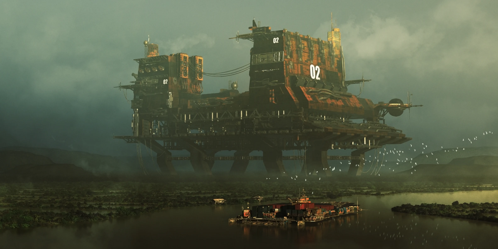
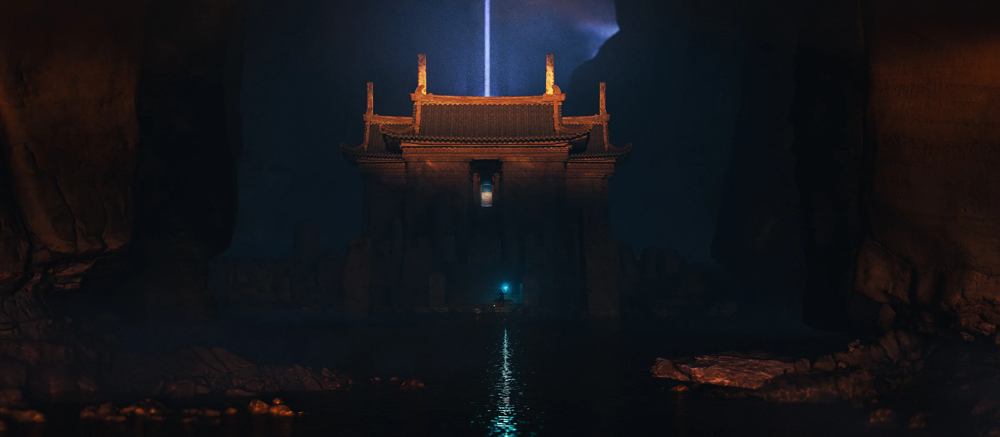
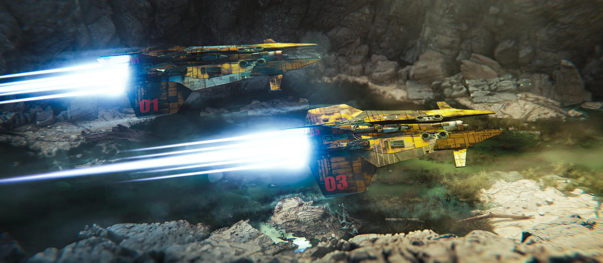
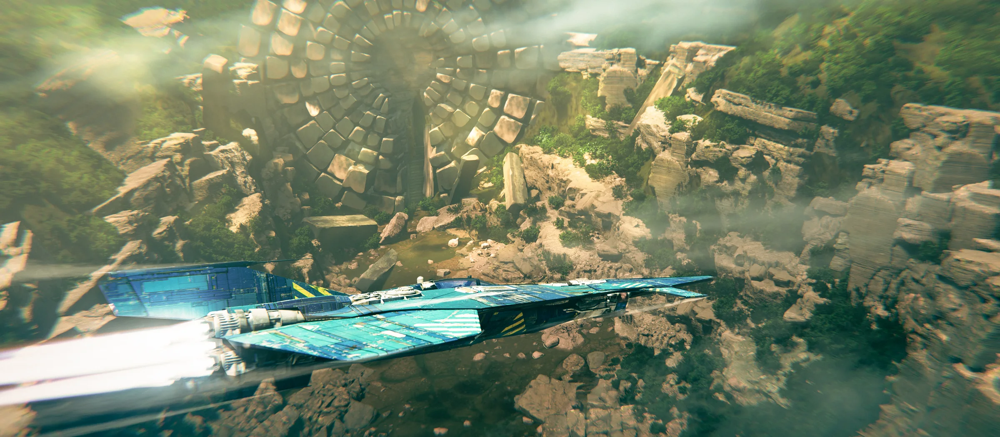
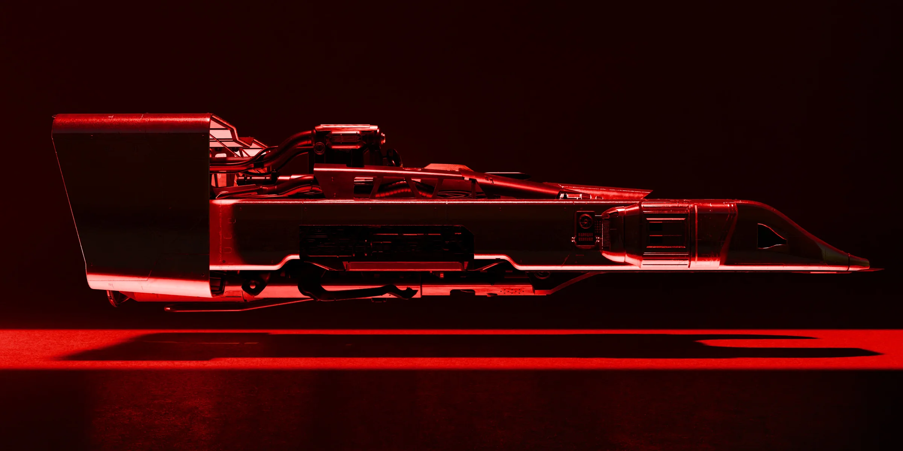
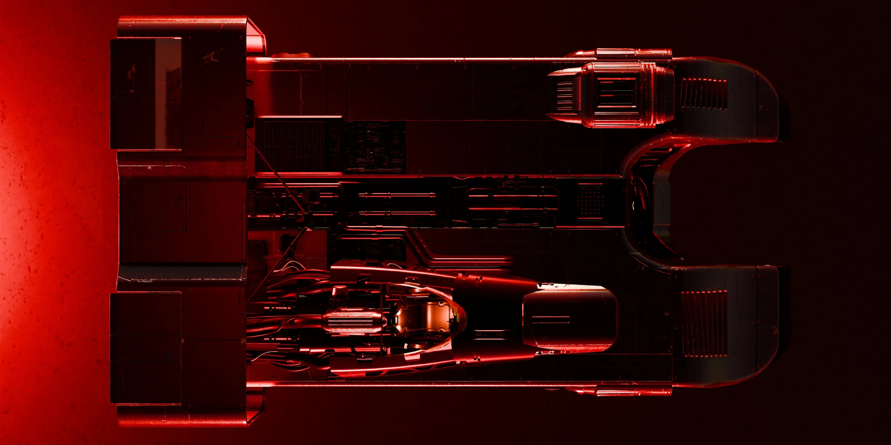
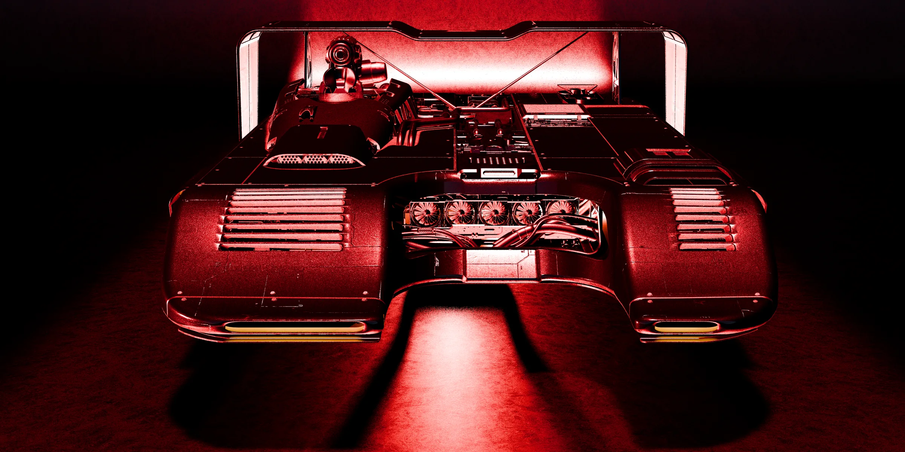
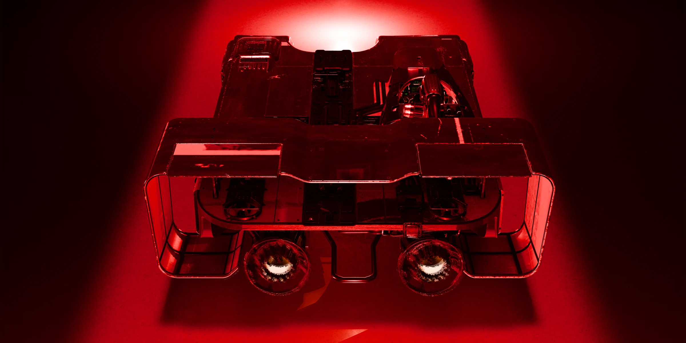

Case study · Hands-on Visual Development
Selected Visual
Development & Consulting
Personal visual-development work spanning worlds, environments, vehicles and visual prototyping—showing the hands-on craft and design judgement behind my art-direction practice.
Creative practice
Direction grounded in making.
I use hands-on visual development to solve questions before they become expensive production problems. The goal is not to generate images for their own sake, but to establish atmosphere, scale, form language, composition and functional logic clearly enough that the next production decision becomes easier.
This work complements my leadership case studies by showing the craft foundation behind the direction: I can explore, prototype, paint over and resolve visual problems directly when a project needs it.
World & atmosphere
Establish the feeling before the detail.
Large-scale environment work starts with hierarchy: where the eye goes, what establishes the world, what provides scale and what the image needs to communicate before surface detail takes over.



Vehicle & object design
Form follows role, scale and use.
Vehicle design is treated as a system rather than a single beauty shot. The silhouette has to communicate purpose, while multiple views expose proportion, access, volume and the practical relationships a production team will eventually need to model.





Consulting value
Make the next decision easier.
In consulting and early visual development, the useful output is often not a finished painting. It can be a blockout, paintover, composition test, design sheet or visual rule that removes uncertainty for the team. I choose the level of finish according to the decision the image needs to support.
That is the same principle I use as an Art Director: define the intent clearly, expose the important choices and give teams enough structure to move forward without over-prescribing the solution.